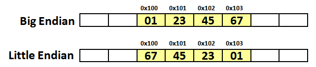
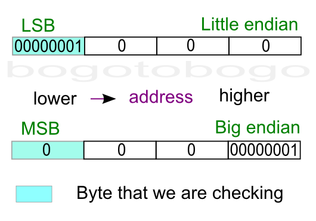
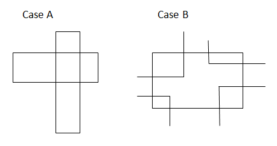

C++ Tutorial:
Small Programs - 2017
Computing the number of 1-bits in an unsigned integer:
/* Counting the Bit Set for an Unsigned Integer */
/*
(A) Loop through all the bits
Computing time is proportional to the number of bits
(B) Computing time is proportional to the number of bits set
*/
#include <iostream>
using namespace std;
/* bit count for unsigned integer */
/* checking if the first bit == 1 while shifting right
(25)
11001 -> 1100 -> 110 -> 11 -> 1
*/
int bit_countA(unsigned int n){
int count = 0;
while(n) {
count += n & 0x1u;
n >>= 1;
}
return count;
}
/* sets the right most bit set 1 to 0 */
/* Computing time is proportional to the number of bits set */
int bit_countB(unsigned int n) {
int count = 0;
while(n) {
count ++;
n &= n - 1;
}
return count;
}
int main()
{
/* 25 (11001) */
unsigned int num = 25;
cout << num <<": # of bits set (A) is " << bit_countA(num) << endl;
cout << num <<": # of bits set (B) is " << bit_countB(num) << endl;
return 0;
}
strlen() counts just the visible characters and not the null character.
int strlen1(const char *s) {
int n=0;
while (*s++) n++;
return(n);
}
int strlen2(const char *s) {
int n=0;
while (s[n]) n++;
return(n);
}
char* strcpy1(char s1[], const char s2[]) {
for(int i=0; i <=strlen(s2); i++) {
s1[i] = s2[i];
}
return s1;
}
char* strcpy2(char *s1, const char *s2) {
char *p = s1;
while(*s2!='\0') {
*s1 = *s2;
s1++;
s2++;
}
*s1 = '\0';
return p;
}
char* strcpy3(char *s1, const char *s2) {
char *p = s1;
while(*s2) *s1++ = *s2++;
*s1 = '\0';
return p;
}
char* strcpy4(char *s1, const char *s2) {
char *p = s1;
while(*s1++ = *s2++);
return p;
}
char* strcpy5(char *s1, const char *s2) {
int i = 0, j = 0;
while(s1[i++] = s2[j++]);
return s1;
}
strdup() does dynamic memory allocation for the character array including the end character '\0' and returns the address of the heap memory:
char *strdup (const char *s) {
char *p = malloc (strlen (s) + 1); // allocate memory
if (p != NULL)
strcpy (p,s); // copy string
return p; // return the memory
}
So, what it does is giving us another string identical to the string given by its argument, without requiring us to allocate memory. But we still need to free it, later.
Though strdup() has been widely used, it's not a standard C/C++ library. So, there is an ambiguity regarding which memory allocation function was used and which deallocation function should be used to deallocate the memory: free() or delete()?
So, if the portability of our code is an issue, we should avoid using it.
Copy block of memory
Copies the values of sz bytes from the location pointed by source directly to the memory block pointed by destination.
The underlying types of the objects pointed by both the source and destination pointers are irrelevant for this function;
The result is a binary (bit pattern) copy of the data.
The function does not check for any terminating null character in source - it always copies exactly sz bytes.
The behavior of memcpy() is undefined if source and destination overlap.
#include <iostream>
using namespace std;
void *memcpy( void *destination, const void *source, size_t sz ) {
char *dest = (char *)destination;
char const *src = (char *)source;
while (sz--)
*dest++ = *src++;
return destination;
}
int main()
{
char src1[] = "Ludwig Van Beethoven";
char *src2 = "Franz Liszt ";
char dest[40];
cout << "src 1: " << src1 << endl;
memcpy(dest,src1, strlen(src1)+1);
cout << "dest: " << dest<< endl;
cout << "src 2: " << src2 << endl;
memcpy(dest,src2, strlen(src2)+1);
cout << "dest: " << dest<< endl;
return 0;
}
Output is:
src 1: Ludwig Van Beethoven dest: Ludwig Van Beethoven src 2: Franz Liszt dest: Franz Liszt
Memmove() copies n bytes between two memory areas; unlike memcpy(), the areas may overlap. Actually, it is a variant of memcpy() that allows the source and destination block to overlap; otherwise it is equivalent (but slightly slower).
#include <iostream>
using namespace std;
void *memcpy(void *dest, const void *src, size_t sz)
{
char *tmp = (char *)dest;
char *s = (char *)src;
while(sz--) {
*tmp++ = *s++;
}
return dest;
}
void *memmove(void *dest, const void *src, size_t sz)
{
char *tmp, *s;
if (dest <= src) {
tmp = (char *) dest;
s = (char *) src;
while (sz--)
*tmp++ = *s++;
}
else {
tmp = (char *) dest + sz;
s = (char *) src + sz;
while (sz--)
*--tmp = *--s;
}
return dest;
}
int main()
{
char src[50] = "Einstein was a very nice person!";
cout << src << endl;
memmove(src + 20, src + 15, 17);
cout << src << endl;
return 0;
}
Output is:
Einstein was a very nice person! Einstein was a very very nice person!
Sets the first sz bytes of the block of memory pointed by destination to the specified source (interpreted as an unsigned char).
#include <stdio.h>
#include <string.h>
void *MyMemset(void* destination, int source, size_t sz)
{
char *pt = (char *)destination;
while(sz--) {
*pt++ = (unsigned char)(source);
}
return destination;
}
int main()
{
char str1[] = "What the heck is memset?";
char str2[] = "What the heck is memset?";
memset(str1 + 5, '*',8);
puts(str1);
MyMemset(str2 + 5, 'x',8);
puts(str2);
return 0;
}
Output is:
What ******** is memset? What xxxxxxxx is memset?
Compare two blocks of memory.
Compares the first sz bytes of the block of memory pointed by s1 to the first sz bytes pointed by s2, returning zero if they all match or a value different from zero representing which is greater if they do not. Unlike strcmp(), the function does not stop comparing after finding a null character.
#include <iostream>
using namespace std;
int memcmp(const void *s1, const void *s2, size_t sz)
{
if (sz!= 0) {
const char *p1 = (const char *)s1;
const char *p2 = (const char *)s2;
do {
if (*p1++ != *p2++)
return (*--p1 - *--p2);
} while (--sz!= 0);
}
return (0);
}
int main ()
{
char s1[] = "abc123";
char s2[] = "abc12A";
int n = memcmp ( s1, s2, sizeof(s1) );
if (n > 0)
cout << s1 << " is greater than " << s2 << endl;
else if (n < 0)
cout << s1 << " is less than " << s2 << endl;
else
cout << s1 << " is the same as " << s2 << endl;
return 0;
}
Output is:
abc123 is less than abc12A
example A
#include <sstream>
int str2intA(const string &str;) {
stringstream ss(str);
int n;
ss >> n;
return n;
}
example B
int str2intB(const string &str;){
int n = 0;
int len =str.length();
for(int i = 0; i < len; i++) {
n *= 10;
n += str[i]-'0';
}
return n;
}
example A
#include <sstream>
string int2strA(int n) {
stringstream ss;
ss << n;
return ss.str();
}
example B
string int2strB(int numb) {
int i=0;
int end=10;
char* temp = new char[end];
//store one digit at a time
for(i = 0; numb > 0; i++) {
temp[i] = (numb % 10) + '0';
numb /= 10;
}
// temp has the number in reverse order
int len = i;
int ii = 0;
string s = new char[len];
while(i > 0) s[ii++] = temp[--i];
s.erase(len);
delete temp;
return s;
}
example C
#include <iostream>
#include <cstring>
using namespace std;
// reverse the string
void reverse(char *s)
{
int sz = strlen(s);
char c;
int i, j;
for(i = 0, j = sz -1; i < j; i++, j--) {
c = s[i];
s[i] = s[j];
s[j] = c;
}
}
// itoa
void int2strC(int n, char *s)
{
int i = 0;
while( n ) {
s[i++] = n % 10 + '0';
n /= 10;
}
s[i] = '\0';
cout << "before the reverse s = " << s << endl;
reverse(s);
}
int main()
{
char s[10];
int n = 987654321;
cout << "input n = " << n << endl;
int2strC(n, s);
cout << "output s = " << s << endl;
return 0;
}
Output from the run:
input n = 987654321 before the reverse s = 123456789 output s = 987654321
#include <iostream>
using namespace std;
double atofA(char s[])
{
double d = 0, power = 1;
int sign = 1;
int i = 0;
if(s[i] == '-' ) sign = -1;
i++;
while(s[i]) {
if(s[i] == '.') break;
d = d * 10 + (s[i] - '0');
i++;
}
i++;
power = 0.1;
while(s[i]) {
d += (s[i] - '0')*power;
power /= 10.0;
i++;
}
return d*sign;
}
int main()
{
double d = atofA("-314.1592");
cout.precision(7);
cout << d << endl;
return 0;
}
#include <iostream>
using namespace std;
int reverse_int(int n)
{
int m = 0;
while(n >= 1) {
m *= 10;
m += n % 10;
n = n / 10;
}
return m;
}
int main()
{
int n;
cin >> n;
cout << "reverse of " << n << " is " << reverse_int(n) << endl;
return 0;
}
Output:
345 reverse of 345 is 543
238*13 without any multiplication operation.
Actually, the algorithm we're going to use is known as Russian Peasant Multiplication or
wiki-Ancient Egyptian multiplication.
// Russian Peasant Multiplication
#include <iostream>
#include <iomanip>
using namespace std;
int RussianPeasant(int a, int b)
{
int x = a, y = b;
int val = 0;
cout << left << setw(5) << x << left << setw(5) << y << left << setw(5) << val << endl;
while (x > 0) {
if (x % 2 == 1) val = val + y;
y = y << 1; // double
x = x >> 1; // half
cout << left << setw(5) << x << left << setw(5) << y << left << setw(5) << val << endl;
}
return val;
}
int main() {
RussianPeasant(238, 13);
return 0;
}
The output should look like this:
238 13 0 119 26 0 59 52 26 29 104 78 14 208 182 7 416 182 3 832 598 1 1664 1430 0 3328 3094
Actually, the multiplication is known as Russian Peasant Multiplication. Whenever x is odd, the value of y is added to val until x equals to zero, and then it returns 3094.
Example A
#include <iostream>
#include <cstring>
void reverse_string(char s[]) {
int i,j,c;
for(i = 0, j = strlen(s)-1; i < j ; i++, j-- ) {
c = s[i];
s[i] = s[j];
s[j] = c;
}
}
int main() {
char s[] ="reverse me";
reverse_string(s);
std::cout << s << std::endl;
return 0;
}
Example B Printing a String Reversed
Here we have two print functions, one for normal and the other one for printing a string in reverse.
#include <iostream>
using namespace std;
void normalPrint(char *s)
{
if(*s) {
putchar(*s);
normalPrint(s+1);
}
}
void reversePrint(char *s)
{
if(*s) {
reversePrint(s+1);
putchar(*s);
}
}
int main()
{
char *str = "Normal or Reverse";
normalPrint(str);
cout << endl;
reversePrint(str);
cout << endl;
return 0;
}
Output is:
Normal or Reverse esreveR ro lamroN
This code is using map.
- Put all characters into a map.
- If necessary (repeated), it will increment a counter which is the 2nd component of map, value.
- Then, traverse the string and search the map. If found and counter value is 1, return that character.
- Complexity: traversing (O(N)), searching balanced binary tree (O(log(N)) => O(N + log(N)) => O(N)
// Returning a character which is the first non-repeated in a string
#include <iostream>
#include <string>
#include <map>
using namespace std;
char find(string s)
{
map<char,int> myMap;
int len = s.length();
for(int i = 0; i < len; i++) ++myMap[s[i]];
for(int i = 0; i < len; i++)
if(myMap.find(s[i])->second == 1) return s[i];
return 0;
}
int main()
{
string s="abudabi";
cout << find(s);
return 0;
}
This method is using simple array utilizing the inversion of character and integer.
Complexity: O(N) - It needs just two traversing.
// Returning a character which is the first non-repeated in a string
#include <iostream>
using namespace std;
char find(char* s)
{
int myArr[256] = {0};
int len = strlen(s);
for(int i = 0; i < len; i++)
myArr[s[i]]++;
for(int i = 0; i < len; i++)
if(myArr[s[i]] == 1) return s[i];
return 0;
}
int main()
{
char* s="abudabi";
cout << find(s); // output 'u'
return 0;
}
#include <iostream>
using namespace std;
int bsearch(int [], int, int, int);
int main()
{
const int arrSize = 100;
int arr[arrSize];
for (int i = 0; i <= arrSize -1; i++) {
arr[i] = i;
}
int x = 35;
int low = 0;
int high = arrSize -1;
int found = bsearch(arr, x, low, high);
if(found == -1) {
cout << "Could not find " << x << endl;
return 0;
}
cout << "The value " << x << " is at " << found << endl;
return 0;
}
int bsearch(int arr[], int x, int low, int high) {
int mid;
if(high < low) return -1; // no match
while (low <= high) {
mid = low + (high - low) / 2;
if(x < arr[mid])
high = mid - 1;
else if (x > arr[mid])
low = mid + 1;
else
return mid; // this is match
}
}
int bsearch(int arr[], int x, int low, int high) {
int mid;
if(high < low) return -1; // no match
mid = low + (high - low) / 2;
if(x < arr[mid])
bsearch(arr, x, low, mid - 1);
else if (x > arr[mid])
bsearch(arr, x, mid + 1, high);
else
return mid; // this is match
}
If we want to represent a two-byte hex number, say c23g, we'll store it in two sequential bytes c2 followed by 3g. It seems that it's the right way of doing it. This number, stored with the big end first, is called big-endian. Unfortunately, however, a few computers, namely anything with an Intel or Intel-compatible processor, store the bytes reversed, so c23g would be stored in memory as the sequential bytes 3g followed by c2. This storage method is called little-endian.
Endian is important to know when reading or writing data structures, especially across networks so that different application can communicate with each other. Sometimes the endianness is hidden from the developer. Java uses a fixed endianness to store data regardless of the underlying platform's endianness, so data exchanges between two Java applications won't normally be affected by endianness. But other languages, C in particular don't specify an endianness for data storage, leaving the implementation free to choose the endianness that works best for the platform.
On big-endian (PowerPC, SPARC, and Internet), the 32-bit value x01234567 is stored as four bytes 0x01, 0x23, 0x45, 0x67, while on little-endian (Intel x86), it will be stored in reverse order:

The picture below is a diagram for the example to check if a machine is little endian or big endian. The box shaded blue is the the byte we are checking because it's where a one-byte type (char) will be stored. The diagram shows where an integer (4-byte) value 1 is stored.
We can distinguish between the LSB and the MSB because the value 1 as an integer, has the value of 1 for LSN, and the value of 0 for MSB.
Note that a little endian machine will place the 1 (0001x, LSB) into the lowest memory address location. However, a big endian machine will put 0 (0001x, MSB) into the lowest memory address location.
Source A
#include <iostream>
using namespace std;
/* if the dereferenced pointer is 1, the machine is little-endian
otherwise the machine is big-endian */
int endian() {
int one = 1;
char *ptr;
ptr = (char *)&one;
return (*ptr);
}
int main()
{
if(endian())
cout << "little endian\n";
else
cout << "big endian\n";
}
Source B
#include <iostream>
using namespace std;
int endian() {
union {
int one;
char ch;
} endn;
endn.one = 1;
return endn.ch;
}
int main()
{
if(endian())
cout << "little endian\n";
else
cout << "big endian\n";
}
It is tempting to use bit operation for this problem. However, bit shift operator works on integer, not knowing the internal byte order, and that property prevents us from using the bit operators to determine byte order.
To check out the endian, we can just print out an integer (4 byte) to a 4-character output with the address of each character.
#include <stdio.h>
int main()
{
int a = 12345; // x00003039
char *ptr = (char*)(&a;);
for(int i = 0; i < sizeof(a); i++) {
printf("%p\t0x%.2x\n", ptr+i, *(ptr+i));
}
return 0;
}
Output:
0088F8D8 0x39 0088F8D9 0x30 0088F8DA 0x00 0088F8DB 0x00
As we see from the output, LSB (0x39) was written first at the lower address, which indicate my machine is little endian.
Given a char array {1,234,34,54} Modify the char array so that there is no comma in the most efficient way. We must get a char array {12343454}
#include <iostream>
using namespace std;
void remove_comma(char arr[])
{
char *b = arr, *c = arr;
while(*b)
{
if(*b == ',') b++;
else
*c++ = *b++;
}
*c = '\0';
return;
}
int main()
{
char arr[] = "1,234,34,54";
cout << arr << endl;
remove_comma(arr);
cout << arr << endl;
return 0;
}
Output:
1,234,34,54 12343454
#include <iostream> using namespace std; #includeusing namespace std; #define HASHSIZE 101 struct nlist { /* table entry: */ struct nlist *next; /* next entry in chain */ char *name; /* defined name */ char *defn; /* replacement text */ }; static struct nlist *hashtab[HASHSIZE]; unsigned hash_function(char *s) { unsigned hashval; for (hashval = 0; *s != '\0'; s++) hashval = *s + 31 * hashval; return hashval % HASHSIZE; } struct nlist *lookup(char *s) { struct nlist *np; for (np = hashtab[hash_function(s)]; np != NULL; np = np->next) if (strcmp(s, np->name) == 0) return np; /* found */ return NULL; /* not found */ } /* install: put (name, defn) in hashtab */ struct nlist *install(char *name, char *defn) { struct nlist *np; unsigned hashval; if ((np = lookup(name)) == NULL) { /* not found */ np = new nlist; if (np == NULL || (np->name = _strdup(name)) == NULL) return NULL; hashval = hash_function(name); np->next = hashtab[hashval]; hashtab[hashval] = np; } else /* already there */ /*free previous defn */ delete np->defn; if ((np->defn = _strdup(defn)) == NULL) return NULL; return np; } /* uninstall: take (name, defn) out of hashtab */ int undef(char * name) { struct nlist * np1; /* name not found */ if ((np1 = lookup(name)) == NULL) return 1; /* name found */ if((np1 = hashtab[hash_function(name)]) != NULL ) { hashtab[hash_function(name)] = np1->next; delete np1; return 0; } /* name not found */ return 1; } void print() { struct nlist *np; for(int i = 0; i < HASHSIZE; i++) { np = hashtab[i]; if(np) cout << np->name << "-->" << np->defn << " "; } cout << endl; } int main() { install("A","65"); install("B","66"); install("C","67"); install("D","68"); install("E","69"); print(); undef("C"); print(); undef("B"); print(); return 0; }
Output from the run:
A-->65 B-->66 C-->67 D-->68 E-->69 A-->65 B-->66 D-->68 E-->69 A-->65 D-->68 E-->69
/* Calculator based on K & R
(1) Not working for '(' such as 1+(5-3)
(2) Added
getop(s);
push(a2f(s));
after '+', '-', '*', and '/' to push next number
*/
#include <iostream>
#include <cstring>
#include <cctype>
using namespace std;
int getop(char []);
void push(double);
double pop(void);
int getch(void);
void ungetch(int);
int a2f(char *);
void calc();
int main()
{
calc();
return 0;
}
const int MAXOP = 100;
const char NUMBER = '0';
void calc() {
int type;
double op2;
char s[MAXOP];
while((type = getop(s)) != EOF) {
switch (type) {
case NUMBER:
push(a2f(s));
break;
case '+':
getop(s);
push(a2f(s));
push(pop() + pop());
break;
case '*':
getop(s);
push(a2f(s));
push(pop() * pop());
break;
case '-':
getop(s);
push(a2f(s));
op2 = pop();
push(pop()-op2);
break;
case '/':
getop(s);
push(a2f(s));
op2 = pop();
if(op2 != 0.0)
push(pop() / op2);
else
cout << "error: division by zero" << endl;
break;
case '\n':
cout << pop() << endl;
break;
default:
cout << "error: unknown command " << s << endl;
}
}
}
// getop(): get next operator or numeric operand
int getop(char s[]) {
int i, c;
while ( (s[0] = c = getch()) == ' ' || c == '\t')
;
s[1] = '\0';
if( !isdigit(c) && c != '.')
return c; // not a number
i = 0;
if (isdigit(c)) // collect integer part
while (isdigit(s[++i] = c = getch()))
;
if (c == '.') // collect fraction
while (isdigit(s[++i] = c = getch()))
;
s[i] = '\0';
if (c != EOF )
ungetch(c);
return NUMBER;
}
const int BUFSIZE = 100;
char buf[BUFSIZE];
int bufp = 0;
int getch(void) {
return (bufp > 0) ? buf[--bufp] : cin.get();
}
void ungetch(int c) {
if (bufp >= BUFSIZE)
cout << "ungetch(): too many characters\n";
else
buf[bufp++] = c;
}
int a2f(char *s) {
int n = 0;
while(*s) {
n *= 10;
n += (*s++)-'0';
}
return n;
}
const int MAXVAL = 100;
int sp = 0;
double val[MAXVAL];
void push(double f) {
if( sp < MAXVAL )
val[sp++] = f;
else
cout << "error: stack full, can't push "<< f << endl;
}
double pop(void) {
if (sp > 0)
return val[--sp];
else {
cout << "error: stack empty \n";
return 0.0;
}
}
How do we find the number of structures for the given array of structures in the sample code below?
#include <iostream>
using namespace std;
struct vehicle
{
int price;
char type[10];
} car[] = {
{1,"a"},{2,"b"},{3,"c"}
};
int main()
{
cout << "sizeof(car)=" << sizeof(car) << endl;
cout << "sizeof(*car)=" << sizeof(*car) << endl;
cout << "sizeof(car)/sizeof(*car)=" << sizeof(car)/sizeof(*car) << endl;
return 0;
}
Answer is:
sizeof(car)=48 sizeof(*car)=16 sizeof(car)/sizeof(*car)=3
Note that the size of an array of vehicle struct is not 4+1*10 but 16. This is probably due to padding/allignmment:
4 + 1*4 + 1*4 + (1*2+2) = 16
As an exercise, how about the following example:
struct StructA
{
char ch1;
char ch2;
int n;
};
struct StructB
{
char ch1;
int n;
char ch2;
};
int sizeA = sizeof(StructA); // sizeA = 1 + 1 + (2-padding) + 4 = 8
int sizeB = sizeof(StructB); // sizeB = 1 + (3-padding) + 4 + 1 + (3-padding) = 12
Remember, it is frequently very difficult to predict the sizes of compound datatypes such as a struct or union due to structure padding. Another reason for using sizeof is readability.
#include <iostream>
class con
{
public:
struct node
{
int data;
int rest;
};
con(){}
};
int main()
{
con c;
std::cout << "size of con class =" << sizeof(c); // size is 1
return 0;
}
The class is empty, in other words, no members. But the size of the class is 1. Not sure but it seems to be related to the pointer arithmetic(?). However, if we add the following to the structure, things change:
struct node
{
int data;
int rest;
} nd;
The the output becomes 4(data)+4(rest)=8. If we use pointer then:
struct node
{
int data;
int rest;
} *nd;
the size becomes 4(nd).
#include <iostream>
#include <cassert>
using namespace std;
char *left_space_trim(char *buf, const char *s) {
assert(buf != NULL);
assert( s!= NULL);
while(isspace(*s))
s++;
strcpy(buf,s);
return buf;
}
int main()
{
char *srcStr = strdup(" String with left_side spaces");
char *dstStr = (char*)malloc(strlen(srcStr)+1);
cout << srcStr << "=>" << left_space_trim(dstStr,srcStr) << endl;
return 0;
}
Output is:
String with left_side spaces=>String with left_side spaces
It is also called OBB/OBB (Oriented Bounding Box) Intersection problem. Here, a brute force method will be presented first, and the other one (separating axes approach) which seems more elegant will come later time.

#include <iostream>
class Point
{
public:
Point(float a, float b):x(a),y(b){}
float getX() {return x;}
float getY() {return y;}
private:
float x, y;
};
class Rect
{
public:
Rect(Point a, Point b):ul(a),lr(b){}
float getHeight() {return ul.getY()-lr.getY();}
float getWidth() {return lr.getX()-ul.getX();}
float getXmin() {return ul.getX();}
float getXmax() {return lr.getX();}
float getYmin() {return lr.getY();}
float getYmax() {return ul.getY();}
private:
Point ul,lr;
};
bool overlapped(Rect &r1;, Rect &r2;)
{
float height1 = r1.getHeight();
float height2 = r2.getHeight();
float width1 = r1.getWidth();
float width2 = r2.getWidth();
// case A: No corners inside
if(r1.getWidth() >= r2.getWidth()) {
if(r2.getXmin() >= r1.getXmin() && r2.getXmax() <= r1.getXmax()
&& r2.getYmin() <= r1.getYmin() && r2.getYmax() >= r1.getYmax() )
return true;
}
else {
if(r1.getXmin() >= r2.getXmin() && r1.getXmax() <= r2.getXmax()
&& r1.getYmin() <= r2.getYmin() && r1.getYmax() >= r2.getYmax() )
return true;
}
// case B: r2's corner inside r1 rect? (compare r1 with r2)
// r2's ul (Xmin, Ymax)
if(r1.getXmin() <= r2.getXmin() && r1.getXmax() >= r2.getXmin()
&& r1.getYmax() >= r2.getYmax() && r1.getYmin() <= r2.getYmax() )
return true;
// r2's ur (Xmax, Ymax)
if(r1.getXmin() <= r2.getXmax() && r1.getXmax() >= r2.getXmax()
&& r1.getYmax() >= r2.getYmax() && r1.getYmin() <= r2.getYmax() )
return true;
// r2's ll (Xmin, Ymin)
if(r1.getXmin() <= r2.getXmin() && r1.getXmax() >= r2.getXmin()
&& r1.getYmax() >= r2.getYmin() && r1.getYmin() <= r2.getYmin() )
return true;
// r2's lr (Xmax, Ymin)
if(r1.getXmin() <= r2.getXmax() && r1.getXmax() >= r2.getXmax()
&& r1.getYmax() >= r2.getYmin() && r1.getYmin() <= r2.getYmin() )
return true;
return false;
}
int main()
{
float x1 = 0.0, y1 = 5.0, x2 = 5.0, y2 = 0.0;
float x3 = 4.0, y3 = 1.0, x4 = 6.0, y4 = -1.0;
Point pt1(x1,y1), pt2(x2,y2);
Point pt3(x3,y3), pt4(x4,y4);
Rect rta(pt1,pt2);
Rect rtb(pt3,pt4);
if(overlapped(rta,rtb))
std::cout << "Overlapped: " << std::endl;
else
std::cout << "Not overlapped: " << std::endl;
return 0;
}
The input an ordered array.
We start to check from both ends, and depending on the sum of the pair, we either increment left index or decrement the right index until they meet.
#include <iostream>
using namespace std;
// input sum
// input array, a
// input size of array, sz
// input & output pairs of integers, pair
int fnd(int sum, int *a, int sz, int *pair)
{
int i = 0, j = sz-1, index = 0, count = 0;
while(i < j) {
if(a[i]+a[j] > sum)
j--;
else if(a[i]+a[j] < sum)
i++;
else {
pair[index++] = a[i++];
pair[index++] = a[j--];
count += 2;
}
}
return count;
}
int main()
{
int sum =18;
int a[] = {1, 3, 5, 7, 9, 11, 13, 15, 16};
int size = sizeof(a)/sizeof(int);
int *pair = new int[size];
int count = fnd(sum, a, size, pair);
for(int i = 0; i < count; i++) cout << pair[i] << " ";
return 0;
}
Ph.D. / Golden Gate Ave, San Francisco / Seoul National Univ / Carnegie Mellon / UC Berkeley / DevOps / Deep Learning / Visualization